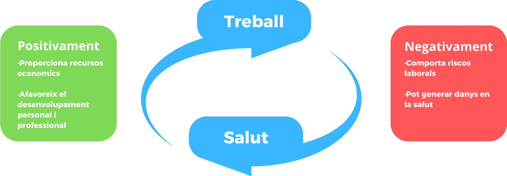
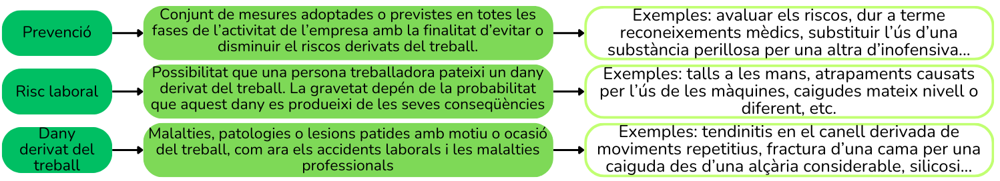
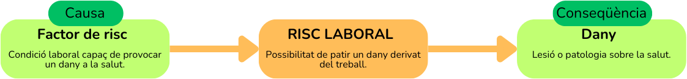
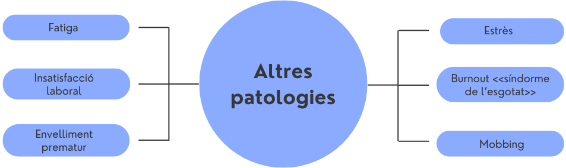
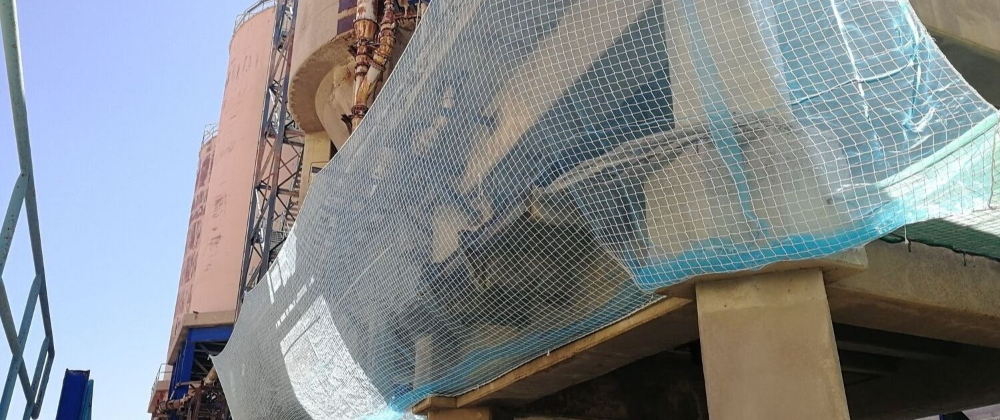
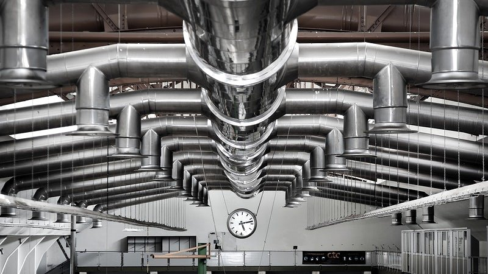
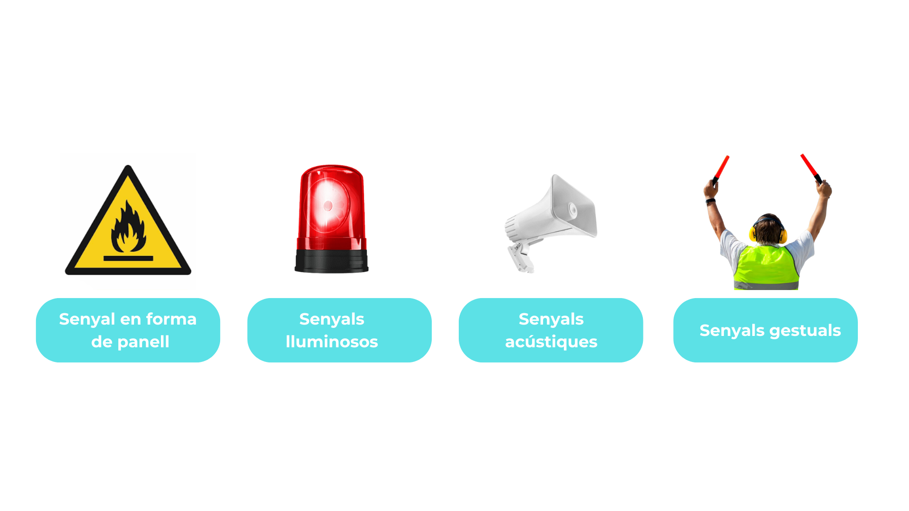

1. El treball i la salut
El treball i la salut estan interrelacionats. El treball pot repercutir positivament en la salut, ja que a través d'aquest
satisfem les nostres necessitats econòmiques, personals, socials i de desenvolupament professional. Per contra, la nostra salut pot veure's perjudicada per
unes condicions de treball no adequades.

Actualment, la salut no s'entén únicament com l'absència de malaltia. L'Organització Mundial de la Salut (OMS) i l'Organització Internacional del Treball (OIT)
proposen una definició més àmplia.
La salut és un estat de benestar físic, mental i social complet, i no solament l'absència d'afeccions o malalties.
1.1 El dret a la seguretat i a la salut en el treball
El dret a la salut està reconegut a totes les persones en tots els àmbits de la seva vida, incloent-hi el laboral. En l'àrea de les relacions
laborals nascudes dels contractes de treball es reconeix el dret de les persones treballadores a la protecció davant els riscos laborals.
Aquest dret està garantit en diferents normes del dret laboral, tant nacionals com internacionals.
Normes Internacionals
| Unió Europea |
La Unió Europea, en la seva Directiva Marc 89/391, estableix el deure de les empreses de garantir la seguretat i la salut en tots els aspectes relacionats amb el treball. |
| Organització Internacional del Treball (OIT) |
Reconeix el dret de les persones treballadores a un entorn de treball segur i saludable, incloent-lo en els principis i drets fonamentals en el treball. |
Normes nacionals
| Constitució espanyola del 1978 |
La constitució espanyola encomana als poders públics vetllar per la seguretat i la salut de les persones treballadores. |
| Llei de prevenció de riscos laborals |
La Llei de prevenció de risco laborals reconeix el dret de les persones treballadores a una protecció eficaç en matèria de seguretat i salut en el treball. |
| Llei de l'estatut dels treballadors |
L'Estatut dels treballadors reconeix el dret de les persones treballadores a la seva integritat física i a una política adequada de prevenció de riscos laborals. |
1.2 La prevenció de riscos laborals
És difícil trobar alguna activitat laboral que no suposi cap tipus de risc per a la seguretat
i la salut de les persones. Per això és necessària l'adopció de mesures de prevenció.
Per a comprendre millor en què consisteix la prevenció de riscos laborals cal conèixer una sèrie
de conceptes bàsics que s'estableixen en la Llei de prevenció de riscos laborals.

1.3. Les condicions de treball i els factors de risc laboral
Les condicions de treball poden suposar l'exposició a riscos laborals.
La Llei de prevenció de riscos laborals defineix les condicions de treball de la manera
següent: "Una condició de treball és qualsevol característica d'aquest que pugui tenir una influència
significativa en la generació de riscos per a la seguretat i la salut de la persona treballadora."
| Característiques dels locals, les instal·lacions i els equips |
Espais, escales, màquines, eines, portes, instal·lacions elèctriques, etc. |
| Naturalesa dels agents químics, físics i biològics |
Soroll, vibracions, radiacions, virus, bacteris, pols, fibres, etc. |
| Procediments en la utilització dels agents esmentats |
Manipulació d'agents contaminants que pugui influir en la generació de riscos. |
| Característiques del treball, incloent-hi les relatives a la seva organització i ordenació |
Ritme de treball elevat, treball a torns, treball nocturn, monotonia, etc. |
A. Els factors de risc laboral
Els factors de risc són aquelles condicions de treball que generen situacions que poden causar danys
a la salut de les persones. Per tant, es considera factor de risc la condició de treball que,
quan està present, augmenta la probabilitat que es produeixi un dany.
Els conceptes risc laboral, factor de risc i dany estan relacionats:

B. Classificació dels factors de risc laboral
Els factors de risc, l'origen dels perills als quals estan exposades les persones treballadores, es classifiquen en funció
de les condicions de treball de les quals se'n deriven.
| Factors de risc |
Derivats de... |
Riscos |
Danys |
| Condicions de seguretat |
· Llocs de treball: dimensions, escales i baranes.
· Equips de treball: màquines i eines.
· Instal·lacions elèctriques.
· Incendis.
|
Caigudes, desplom d'objectes despresos, xoc contra objectes, atrapaments per objectes o entre objectes, projecció
d'objectes o partícules, contactes elèctrics i incendis.
|
Accidents de treball.
|
| Condicions ambientals |
· Agents físics: soroll, vibracions, radiacions, temperatura i il·luminació
· Agents químics: substàncies i preparats químics.
· Agents biològics: virus, bacteris, protozous, fongs i cucs.
|
Exposició al soroll, a vibracions, a radiacions i a substàncies químiques i agents químics; estrès tèrmic i contactes tèrmics.
|
Malalties professionals. |
| Càrrega de treball |
· Càrrega física: postures, manipulació de càrregues i sobreesforç físic.
· Càrrega mental: contingut de la tasca i temps de resposta a la tasca.
|
Moviments repetitius, sobreesforç, postures forçades, maneig de càrregues, tractament de la informació i ritme de treball.
|
· Fatiga mental.
· Fatiga física.
· Trastorns musculoesquelètics.
|
| Organització del treball |
· Contingut del treball: monotonia, ritme, autonomia i sobrecàrrega.
· Organització del treball: estil de comandament, comunicació i característiques de l'ocupació.
|
Riscos psicosocials: estrès, síndrome del burnout o desgast emocional, violència física en el treball, fatiga i assetjament laboral o mobbing. |
· Malalties.
· Alteració de la conducta.
· Conflictes interpersonals.
|
3. Danys derivats del treball
La Llei de prevenció de riscos laborals estableix que són danys derivats del treball les lesions,
malalties i altres patologies ocasionades en ocasió o motiu del treball.
3.1.Accidents de treball
Un accident de treball és tota lesió corporal que el treballador pateixi amb ocasió o com a conseqüència del treball per compte d'altri.
Què no és un accident de treball? Tota lesió corporal causada per imprudències o per dol.
Els requisits necessaris per poder parlar d'accident de treball són:
Lesió corporal: Es considera lesió el dany físic, psíquic o mental.
Treball per compte aliè: Es produeix quan la lesió la pateix un treballador per compte d'altri.
Relació de causalitat: S'estableix una relació de causa i efecte entre el treball i la lesió.
3.2.Malalties professionals
La llei general de la Seguretat Social defineix la malaltia professional com la contreta a conseqüència del treball executat
per compte d'altri en les activitats que s'especifiquen en el quadre que s'aprovi per disposicions d'aplicacions i desenvolupament d'aquesta llei

Altres patologies
A més dels accidents laborals i les malalties professionals, el treball pot provocar altres patologies

4. Les tècniques de protecció i prevenció
Les empreses adopten certes mesures per a poder garantir la seguretat dels treballadors. Aquestes mesures serveixen per eliminar els riscos,
i poden ser de dos tipus: de protecció i de prevenció.
4.1 Les tècniques de prevenció
Les tècniques de prevenció de riscos eliminen tots els elements que poden suposar riscos, i poden ser de dos tipus:
Mesures de prevenció de tipus material, que serveixen per evitar danys causats pel mateix treball i eviten riscs de lesió, consistint en mesures i tècniques de prevenció.
Mesures de prevenció d'informació i formació, que consisteixen a informar els treballadors dels riscos al seu treball i les mesures que poden adoptar per poder
protegir-se d'aquests.
Tècniques o disciplines preventives
| Tècnica |
Finalitat |
Mesures |
| Seguretat en el treball |
Evitar accidents laborals. |
Actua en equips de treball i mesures de l'entorn, com les superfícies dels locals, sostres i parets, escales o altres elements. |
| Higiene industrial |
Prevenir l'aparició de malalties del treball. |
Serveix per detectar i controla els llocs de concentració de riscos biològics, com virus, bacteris, sorolls, llums, humitat i químics del lloc de treball. |
| Ergonomia |
Adaptar el treball, físicament i psicològicament al treballador per evitar la fatiga. |
Analitza i dissenya tots els processos, eines i llocs de treball per poder adaptar-les a les persones treballadores. |
| Psicosociologia |
Prevenir danys psicològics de la persona treballadora que pugui causar la seva feina. |
Estudia i adapta l'organització del treball. |
| Medicina del treball |
Mantenir en bon estat la salut dels treballadors. |
La medicina del treball vigila la salut de les persones treballadores, i es dedica a tractar i curar malalties professionals i a rehabilitar després d'accidents laborals. |
4.2 Les tècniques de protecció
Les tècniques de protecció són mesures per protegir als treballadors, eliminant o reduint els riscos i, així, els possibles danys i/o malalties. Sempre s'han d'adoptar després de les de prevenció.
Les tècniques de protecció col·lectiva protegeixen a diverses persones al mateix temps i s'han d'anteposar a les individuals. Poden ser mesures de protecció incorporades als llocs de treball o als equips o mitjans de treball.
Són exemples de protecció col·lectiva sobre els llocs de treball: les xarxes, ventilacions o baranes; i de protecció col·lectiva sobre els mitjans de treball: els resguards, dispositius de prevenció i els interruptors diferencials.


Per altra banda, les tècniques de protecció individuals permeten a els treballadors fer la seva feina sense cap risc de manera individual, i les ha de proporcionar
l'empresa a cada persona treballadora, i vigilar l'ús dels equips de protecció individual (EPI).
Els EPI poden ser de molts tipus, per exemple tenim:
Els protectors del cap, que protegeixen de cops, caigudes, xocs... i poden ser cascos de seguretat, barrets o cascos per a usos especials.
Protectors d'orelles, que protegeixen de sorolls excessius, són cascos antisoroll o protectors auditius
També hi ha protectors totals del cos,que poden protegir de caigudes en llocs foscos o poc il·luminats, feines a la vora de carreteres o zones amb trànsit de vehicles, i poden ser equips de protecció contra caigudes, o peces de roba de senyalització, com cinturons, braçalets o armilles reflectores.
5. La senyalització dels riscos laborals
La senyalització de seguretat comunica indicacions o obligacions per protegir la seguretat i la salut laboral mitjançant panells, colors o contrastos visuals.
Els senyals es classifiquen atenent el llenguatge i el mitjà de comunicació utilitzat.
